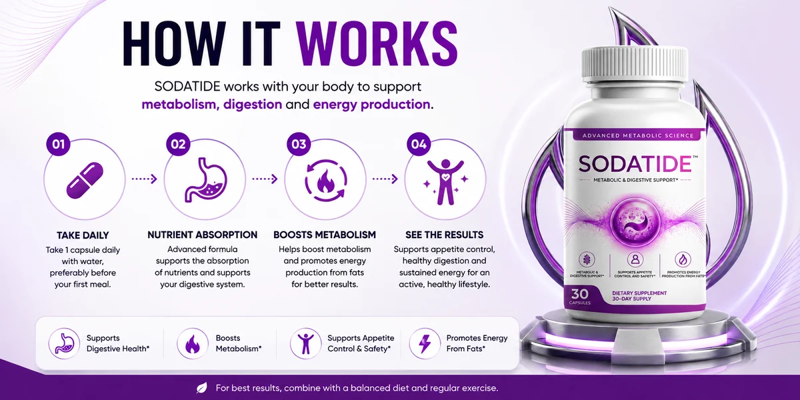

10-Day Metabolic Challenge
A digital guide to kick-start a balanced routine.
A comfortable gut loves routine: regular meals with plenty of fibre, enough water, decent sleep and a little movement every day. SodaTide is a once-a-day vegetarian capsule, 30 to a bottle, that the seller offers as one easy extra beside those habits. This website explains the product in plain words: what the seller says is inside, what each ingredient is, who should ask a doctor first, and what a supplement can and cannot do. SodaTide is a dietary supplement. It does not diagnose, treat or cure any digestive condition or disease, it never replaces medical care, and no result is promised. Start with about SodaTide or how SodaTide works.
| Format | 30 vegetarian capsules per bottle, labelled Metabolic & Digestive Support |
|---|---|
| Directions | One capsule daily with water, ideally before the first meal |
| Positioned for | Gut balance, digestive comfort and metabolic wellness |
| Prices (USD) | 2 bottles $79 each; 3 bottles $69 each; 6 bottles $49 each |
| Made for | Adults 18+; ask a doctor first if you take medicine |
Secured payment · 60-day money-back guarantee
A live illustration of fibre strands and microbes drifting together.
Four plain facts that shoppers check first. More in about SodaTide and the FAQ.
The seller and the supplied badge both say USA-made.
A natural-product badge is part of the product files.
A good-manufacturing-practice badge is part of the product files.
The seller refers to an FDA-registered facility, which does not mean FDA approval of the product.
One capsule a day and a 60-day guarantee. Packs follow below, or read the guarantee terms.
Choose a SodaTide PackSecured payment on the official checkout
SodaTide is a synbiotic dietary supplement for adults, a once-daily vegetarian capsule. The seller lists Chicory Root Inulin and Potato Resistant Starch (prebiotics) with three probiotic strains: Akkermansia muciniphila, Clostridium butyricum and Bifidobacterium infantis.
It suits adults who want one simple capsule beside fibre-rich meals, water and movement. It supports a routine and does not treat any digestive condition.
Read about SodaTide.
Take one capsule daily with water, ideally before your first meal, as the seller directs. Do not exceed the recommended serving. Your bottle label comes first.
Read how SodaTide works.
Ask a doctor first if you take medicine, have a weakened immune system, a serious illness or a digestive condition, are pregnant, nursing or under 18, or have a chicory allergy.
Each area in plain words, with the habits that matter most beside it.
Positioned to support a well-balanced gut community with fibre and probiotic strains.
Positioned to support regularity and comfortable digestion within a steady routine.
Labelled Metabolic & Digestive Support, as part of a balanced diet and regular movement.
More in SodaTide benefits.
Prices are in US dollars, as listed by the seller, and may change. Three and six bottles ship free and include four bonus guides per the seller, while two bottles add shipping at checkout. Every order is a one-time purchase with no subscription. See SodaTide pricing.
$79 per bottle, 60 capsules

Live price, shipping and taxes confirmed at checkout
$49 per bottle, 180 capsules
Live price, shipping and taxes confirmed at checkout
$69 per bottle, 90 capsules
Live price, shipping and taxes confirmed at checkout
Offers can change, so confirm the total at checkout. More on the pricing page.

Every SodaTide order is backed by a 60-day money-back guarantee. Give the routine two full months, and if it is not for you, request a refund through the steps on the refund policy and at checkout. Keep your order confirmation email and any messages with customer support, and read the final terms before you buy.
See the 60-day guarantee page and the refund policy.
Per the seller, three-bottle and six-bottle orders include four free digital guides. Confirm exactly what your order includes at checkout. The guides are general reading, not medical advice. See SodaTide pricing.
A digital guide to kick-start a balanced routine.
A digital guide to everyday self-care habits.
A digital guide focused on gut-friendly habits.
A digital guide to building SodaTide into a daily routine.
Bonus guides do not change the label or the cautions. See the FAQ.
Your digestive tract is home to trillions of microbes. They help break down fibre and take part in how you feel after meals. What they like is predictable: fermentable fibre, water, sleep and movement, which is why a daily habit beats an occasional effort.
SodaTide pairs two fibre sources with three named probiotic strains in one capsule. This site keeps to what the seller states, points out the cautions that matter, such as live strains for people with weakened immunity and inulin for sensitive stomachs, and says plainly what a supplement cannot do. See what gut supplements cannot do.
The limits are stated openly. SodaTide does not diagnose, treat or cure any digestive condition or disease and never replaces medical care. Persistent pain, blood in stool, unexplained weight loss or ongoing changes in bowel habits need a doctor, not a supplement.
If it still suits you, choose a pack, follow the label and use the guarantee window to judge it fairly.
The seller names two fibres, three probiotic strains and a vegetarian capsule, and the full Supplement Facts panel is on the bottle. Each card opens a short page on what it is and who should ask a doctor first.
A prebiotic fibre from chicory root.
A fermentable starch from potato.
A much-discussed gut-lining resident.
A spore-forming strain linked to butyrate.
A well-known Bifidobacterium strain.
A plant-based, non-GMO capsule shell.
See the SodaTide ingredients, or read probiotics: who should ask first.
One capsule a day, 30 to a bottle, and a 60-day guarantee. See the packs below, or read the FAQ.
See the SodaTide PacksSecured payment on the official checkout
Six ways adults describe using SodaTide. Individual results vary, and food, water, sleep and movement matter most.
Positioned to support a balanced gut community.
Positioned for regularity and comfortable digestion.
Label wording: supports appetite control and satiety within a balanced diet.
Labelled Metabolic & Digestive Support.
Label wording: promotes energy production from fats.
Akkermansia is a strain associated with gut-lining wellness.
Seller and badge both say so.
A good-manufacturing-practice badge.
A natural-product badge.
On the 3-bottle and 6-bottle packs.
No subscription or autoship.
Money back, terms shown at checkout.
More in SodaTide benefits. *These statements have not been evaluated by the FDA.
Only verified buyers are quoted. The portraits are illustrative images from the product files, not customers. See how feedback is handled on the SodaTide reviews page.
Chicory Inulin, Resistant Starch and three probiotic strains each get a page, starting at the SodaTide ingredients.
Who should ask first is covered on the probiotics safety page.
The amounts are on the bottle panel, so none are claimed here.
A 60-day money-back guarantee is advertised, with steps on the guarantee page.
Reviews are tied to verified orders, never invented names, towns or star scores.
Email support@sodatide.com with your order details and an honest account.
More on the SodaTide reviews page.
The essentials in one table. More answers are on the SodaTide FAQ page.
| Topic | What to know | What to do |
|---|---|---|
| Weakened immunity or a serious illness | Live probiotic strains are not suitable for everyone | Ask your doctor first |
| Sensitive stomach or digestive condition | Fibre such as inulin can cause gas and bloating at first | Ask first and watch how you feel |
| Medicine, pregnancy or nursing | Not studied for these situations | Ask your doctor or pharmacist first |
| Chicory or plant allergies | Chicory root is in the daisy family | Check the label and ask if unsure |
| Persistent or severe symptoms | A supplement is not an assessment | See a doctor, do not self-treat |
Bigger packs cost less per bottle, and 3 and 6 ship free. See the ordering steps.
$79 per bottle, 60 capsules
Live price, shipping and taxes confirmed at checkout
$49 per bottle, 180 capsules
Live price, shipping and taxes confirmed at checkout
$69 per bottle, 90 capsules
Live price, shipping and taxes confirmed at checkout
Every SodaTide order is backed by a 60-day money-back guarantee. Give the routine two full months, and if it is not for you, request a refund through the steps on the refund policy and at checkout. Keep your order confirmation email and any messages with customer support, and read the final terms before you buy.
See the 60-day guarantee page and the refund policy.
Short answers on the formula, directions, safety and ordering. The full list is on the SodaTide FAQ page.
A once-daily vegetarian capsule, 30 to a bottle, that pairs chicory root inulin and potato resistant starch with three probiotic strains, labelled Metabolic & Digestive Support. See about SodaTide.
Chicory Root Inulin, Potato Resistant Starch, Akkermansia muciniphila, Clostridium butyricum and Bifidobacterium infantis in a vegetarian capsule. The full Supplement Facts panel is on the bottle. See the SodaTide ingredients.
One capsule daily with water, ideally before your first meal. See how SodaTide works.
The seller describes it as a vegetarian, non-GMO capsule and a stimulant-free formula.
No. It is a dietary supplement and does not diagnose, treat or cure any condition. See what gut supplements cannot do.
Anyone with a weakened immune system or serious illness, a digestive condition, a chicory allergy, anyone on medicine, and anyone pregnant, nursing or under 18. See probiotics: who should ask first.
Fibre such as inulin can cause gas or bloating in some people at first. See inulin and bloating: what to expect.
No timeline is promised and results vary. Judge any routine over weeks, beside fibre-rich meals, water and movement.
In US dollars: two bottles $79 each ($158 plus shipping), three $69 each ($207, free shipping), six $49 each ($294, free shipping). See SodaTide pricing.
No. The seller states every order is a one-time purchase with no autoship or recurring billing. Confirm on the order page.
At one capsule a day, a 30-capsule bottle lasts 30 days, so two bottles last about 60 days, three about 90 and six about 180.
Per the seller, 3-bottle and 6-bottle orders include four digital guides: the 10-Day Metabolic Challenge, Facial Rejuvenation, Renova Flora Protocol and a Personalized Usage Guide. Confirm at checkout.
A 60-day money-back guarantee is advertised. See the 60-day guarantee page and the refund policy.
No. It is an independent information website that may earn a commission on orders made through its links, at no extra cost to you.
Through the order buttons on this site, which lead to the official checkout. Unusually cheap listings elsewhere may be counterfeit or expired. How to order SodaTide shows each step.
Pick a pack, check the final price at the secure checkout and begin with a 60-day guarantee behind you.
Order SodaTideSecured payment on the official checkout
What the seller states about the bottle and the formula. The full panel is on the bottle. See the SodaTide ingredients.
| Item | As stated by the seller |
|---|---|
| Product | SodaTide, Metabolic & Digestive Support, Dietary Supplement |
| Form and count | Vegetarian capsules, 30 per bottle, 30-day supply |
| Chicory Root Inulin | Named; amount on the bottle panel |
| Potato Resistant Starch | Named; amount on the bottle panel |
| Akkermansia muciniphila | Named probiotic strain; amount on the bottle panel |
| Clostridium butyricum | Named probiotic strain; amount on the bottle panel |
| Bifidobacterium infantis | Named probiotic strain; amount on the bottle panel |
| Directions | One capsule daily with water, ideally before the first meal |
| Full panel | The full Supplement Facts panel is printed on the bottle |
| Storage | Closed, in a cool, dry place, out of children's reach |
| Read the amounts and cautions on your bottle. * These statements have not been evaluated by the Food and Drug Administration. This product is not intended to diagnose, treat, cure or prevent any disease. | |
The full Supplement Facts panel, amounts and other ingredients are printed on the bottle, so read them before use. Ask a doctor first if you take medicine, have a weakened immune system or a medical condition, are pregnant, nursing or under 18, or have a chicory allergy. Keep the bottle closed in a cool, dry place and out of children's reach.

Infographic from the product files. Its statements carry the FDA asterisk: they have not been evaluated by the Food and Drug Administration. See how SodaTide works.
General public sources on probiotics, digestion and dietary supplements. They do not describe SodaTide itself. Read our own notes on what gut supplements cannot do and sleep and gut health.
SodaTide
30 capsules per bottle · 2, 3 or 6 bottles
.svg)
.svg)